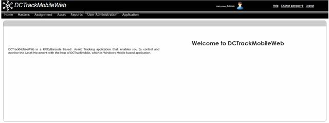
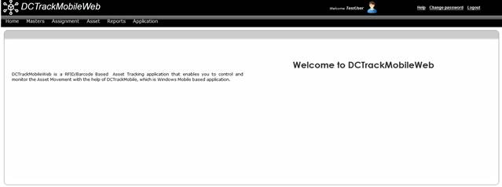

User can then go to the URL
http://servername:port/DCTrackMobileWeb/login.aspx
Upon login, will I see all the menu options on the DCTrackMobileWeb navigation bar?
No. The available menu options on the DCTrackMobileWeb navigation bar will depend on the Group to which the user belongs. Module access rights assignment differs from one group to another. Access to menu options and their corresponding sub menu options are defined by the System Administrator.

Figure 1: DCTrackMobileWeb home page for System Administrator

Figure 2: DCTrackMobileWeb Home Page for other Users
|
Copyright © 2019 Hewlett
Packard Enterprise,v5.2.
|